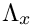
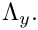
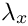
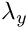

This tutorial demonstrates how to simulate physiological fluid-structure interaction problems, based on medical imaging data, processed with the Vascular Modeling Toolkit.
We combine two single-physics problems, namely
to study the steady flow through an elastic iliac bifurcation. (Please refer to oomph-lib's VMTK tutorial to find out how to generate oomph-lib meshes from medical images.)
The tutorial also provides a detailed discussion of the mechanism by which FaceElements introduce additional unknowns into a problem. This is important in the problem considered here because we employ two different types of FaceElements, both of which introduce additional unknowns. When dealing with nodes that are attached to both types of FaceElements we must therefore be able to determine which nodal values are associated with which FaceElement. The section How FaceElements introduce additional unknowns into a problem below shows how this is done.
The problem (and some results)
The animations below show the deformation of an iliac bifurcation that conveys viscous fluid and deforms in response to the traction that the fluid exerts onto it. As in the previous examples where we considered the constituent single-physics fluid and solid problems, the meshes are obviously very coarse and the boundary conditions are far from "physiologically realistic": We keep the upstream and downstream "ends" of the vessel wall in a fixed position and drive the (steady!) flow by applying a constant pressure drop between the in- and outflow cross sections. The different frames shown in the animation show results for different wall stiffnesses, using the same setup as in another tutorial.
We stress that the computations presented here serve as quick-to-compute proof of concept and refer to the section Comments and Exercises at the end of this tutorial for a discussion on how to make the simulation more "realistic".


The driver code used for this computation is very similar to the one discussed in another tutorial where we used a much simpler geometry in which the three branches of the bifurcation had rectangular cross-sections. Before discussing the changes to the driver code in section The driver code for the FSI problem below, we provide a more detailed discussion of the way in which FaceElements introduce additional unknowns into a problem. Feel free to skip the next section if you're not keen on theory.
How FaceElements introduce additional unknowns into a problem
FaceElements are used widely throughout oomph-lib to apply Neumann/flux/traction-type boundary conditions on the faces of higher-dimensional "bulk" elements. Examples include:
- the application of a flux boundary condition in a Poisson problem;
- the application of traction boundary conditions in fluid and solid mechanics problems;
- the application of a contact-angle boundary condition for the Young-Laplace equation.
In all the examples listed above, the boundary conditions simply add a contribution to the elements' residuals but they do not introduce any additional unknowns into the problem.
FaceElements may also be used to apply boundary conditions via Lagrange multipliers. An example is given in the tutorial that discusses
In such problems, the Lagrange multipliers must be determined as part of the solution, and storage for the associated discrete unknowns is created at the nodes of the FaceElements.
To explain the relevant details of the implementation we consider a simple 2D Navier-Stokes problem discretised using nine-node Taylor-Hood elements (in these elements each vertex node stores two discrete velocities and one pressure; the other nodes store only two velocity degrees of freedom). We assume that boundaries 0 and 1 are subject to boundary conditions imposed via FaceElements, and that each boundary condition introduces its own Lagrange multipliers fields. [Yes, the plural is correct. As an example, consider the case of imposing displacement constraints in a 2D solid mechanics problem via Lagrange multipliers. In this approach the imposition of the boundary condition requires two Lagrange multipliers along each constrained boundary. Physically, the Lagrange multipliers represent the two components of the surface traction required to deform the boundary into the required shape; see the relevant solid mechanics problem for details.]
The sketch below shows the discretisation of the domain, with the black circles representing the nodes. The enlargement of the top right corner also shows the discrete unknowns (nodal velocities and pressures) stored at each node after the creation of the "bulk" Navier-Stokes elements.

The next figure shows the nodal degrees of freedom after the FaceElements on boundary 0 (shown in red) have been attached. The FaceElements share the existing nodes of the underlying "bulk" elements and automatically create storage for any additional nodal unknowns. Here we provide storage for two discrete Lagrange multipliers,  and  Provided that a single FaceElement is attached to a node, the function
can be used to determine the number of nodal values at the FaceElement's j -th node created by the underlying "bulk" element before the FaceElement was attached. It is then easy to identify the additional nodal values associated with the FaceElement in order to apply the boundary conditions for the Lagrange multipliers, say. The methodology is illustrated in the the solid mechanics problem referred to earlier.

The next figure shows the degrees of freedom after the FaceElements on boundary 1 (shown in green) have also been attached. These FaceElements must create storage for their own two Lagrange multipliers,  and . Thus, the corner node (which is attached to both types of FaceElements) has four additional degrees of freedom after all the FaceElements have been created.

The identification of the additional degrees of freedom via a simple offset from the degrees of freedom created by the "bulk" element is now no longer possible. We therefore provide an alternative mechanism to access the relevant information from the nodes themselves via the function
which does exactly what it says. If only a single type of FaceElement is attached to a (boundary) node, the unsigned that is returned by this function is exactly the same as the unsigned that is returned by the corresponding call to FaceElement::nbulk_value(...). To cater for the case where multiple FaceElements are attached to the same node, the above function can take an ID (which defaults to zero) that identifies which type of FaceElement we are dealing with, so the full interface is, in fact,
The ID must be established by the user, typically when the constructor of the specific FaceElement is called. It can then be passed on to the Nodes when the number of values at the nodes is adjusted to accommodate the additional values required by the FaceElement.
To illustrate this, the code extract shown below provides a (partial) listing of the constructor of the ImposeDisplacementByLagrangeMultiplierElement that was used in the solid mechanics problem referred to earlier. The constructor has the usual two arguments that specify the pointer to the "bulk" element, and the index of the face that the FaceElement is to be attached to. The final (optional) argument allows the specification of the ID referred to above. We store the ID in a private the element's private member data.
[We omit a few lines of code that are irrelevant for the present discussion]. Next we specify the number of additional values required at each of the element's nodes and store them in a vector. For a dim -dimensional bulk element, we need dim additional values at each node to store the Lagrange multipliers.
Finally, we pass this vector, together with ID that identifies the type of the FaceElement to the function FaceElement::add_additional_values(...):
This function creates the additional storage at each node and updates the node's internal lookup scheme that provides access to the first value associated with the specified ID.
The fact that the ID is specified as an optional argument means that the user does not have to provide a dummy ID in cases where none is required, i.e. in problems involving just a single type of FaceElement, as in the solid mechanics problem referred to earlier. If a problem does involve multiple FaceElements, the user will be aware of this when writing the driver code and can then provide distinct IDs as and when required; see the section Creating the Lagrange multiplier elements below.
The driver code for the FSI problem
The driver code for the flow through the elastic iliac is almost identical to that in the tutorial considering the same problem in a more simplistic geometry. Comparing the two driver codes using
shows that the only differences relate to the facts that:
- although the meshes for the two problems are topologically equivalent, the boundary numbers assigned by
Tetgenare different. - we impose parallel flow at the vessel's in- and outflow cross-sections, none of which are not aligned with any of the Cartesian coordinate planes. The parallel flow and the imposed pressure drop are therefore enforced by attaching
ImposeParallelOutflowElements, rather thanNavierStokesTractionElementsto the in- and outflow boundaries. We refer to the corresponding single-physics fluids problem for more details on this aspect. - The problem involves two different types of
FaceElements:ImposeParallelOutflowElementsare used to impose parallel flow at the in- and outflow cross-sections.ImposeDisplacementByLagrangeMultiplerElementsare used to deform the boundary of the pseudo-solid fluid mesh to reflect the changes in the geometry of the vessel wall.
FaceElementsintroduce additional unknowns into the problem, we use the methodology described above to distinguish between the two types of Lagrange multipliers.
Once again, we shall discuss only those aspects of the code that are changed from the driver code discussed in the previous tutorial.
The namespace for global parameters
As usual, global parameters are specified in a namespace, which now includes an enum that specifies the IDs for the two different FaceElements.
The Problem constructor
The general structure of the problem constructor remains unchanged. There are a few trivial changes in the import of fluid and solid meshes to reflect the fact that the tetgen boundary numbers are different.
When imposing the boundary conditions for the fluid mesh we do not pin the transverse velocities at the in- and outlets because the parallel flow is now imposed by Lagrange multiplier elements. Hence the only boundary condition to be applied at the in- and outflow cross-sections is the pinning of the nodal positions.
The only significant change arises in the application of the boundary conditions for the Lagrange multipliers. Recall that ImposeDisplacementByLagrangeMultiplierElements are used to deform the FSI boundary of the fluid mesh so that it stays in contact with the vessel wall. This constraint must be applied along the entire FSI boundary, apart from the lines along which it meets the in- and outflow boundaries where the position of the fluid nodes is already pinned. Consequently, we pin the Lagrange multipliers in this part of the mesh.
Similarly, the ImposeParallelOutflowElements ensure that the velocity in the in- and outflow cross-sections is orthogonal to these cross-sections. This constraint must be applied along the entirety of the in- and outflow boundaries, apart from the lines along which they meet the FSI interface where the fluid velocity is already determined by the no-slip condition. Consequently, we also pin the second set of Lagrange multipliers along this part of the fluid mesh boundary.
We loop over all the fluid nodes on the FSI boundary:
For each node we apply the no-slip condition on the wall by pinning all three velocity components,
and determine whether the node also happens to be located on the in- or outflow cross-sections:
If it is, we pin the Lagrange multipliers associated with the ImposeParallelFlowElements, using the BoundaryNodeBase::index_of_first_value_assigned_by_face_element(...) function referred to above, and specifying the appropriate ID.
We repeat the same procedure for the Lagrange multipliers associated with the ImposeDisplacementByLagrangeMultiplierElements:
As usual we document the position of the nodes at which we pinned the Lagrange multipliers in a file to allow for an external sanity check.
The rest of the problem constructor is unchanged.
Creating the Lagrange multiplier elements
The creation of the ImposeDisplacementByLagrangeMultiplierElements is virtually identical to that in the previous tutorial.
The only difference is that we pass the ID that identifies the type of the FaceElement to the constructor of the ImposeDisplacementByLagrangeMultiplierElements:
The rest of the function is unchanged:
An equivalent procedure is adopted in the function create_parallel_flow_lagrange_elements() which follows exactly the same steps as in the corresponding single-physics fluids problem, apart from the fact that we pass the other enumerated ID to the constructor of the ImposeParallelFlowElements. We therefore omit the listing of the function and refer to the source code.
Comments and Exercises
Making the simulation more "realistic"
The simulation shown at the beginning of this tutorial is obviously very crude and suffers from (at least) the sum of the shortcomings that we identified in the tutorials for the constituent single-physics fluid and solid problems. You should consider repeating the computation using finer meshes (consult oomph-lib's VMTK tutorial for details) and explore the use of "flow extensions" which allow the (inevitably artificial) boundary conditions to be applied further from the region of interest. Adding time-dependence to the problem, e.g. by subjecting the flow to a periodic fluctuation in the applied pressure drop would be another interesting exercise.
Source files for this tutorial
- The source files for this tutorial are located in the directory:
demo_drivers/interaction/vmtk_fsi/ - The driver code is:
demo_drivers/interaction/vmtk_fsi/vmtk_fsi.cc
PDF file
A pdf version of this document is available.